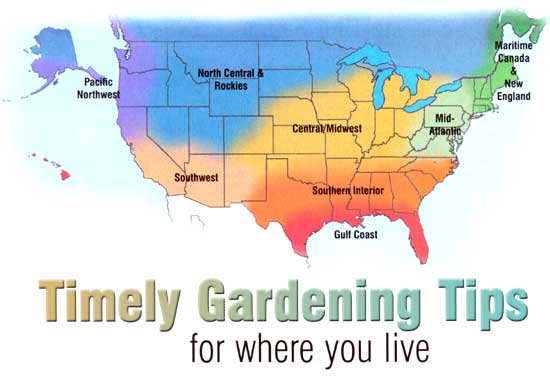
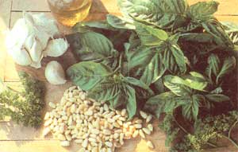

Gardeners Almanac
New England and Maritime Canada
Putting up food and saving seed are a priority right now. Watch for fully mature, dry seedpods and collect them before they shatter. Spread the seeds out to dry completely before storing. Finish harvesting garlic and take advantage of that precious open ground. There is plenty of time to sow a cover crop, like oats or rye. Or turn in 2 to 4 inches of compost and plant fall greens, such as spinach, bok choi, arugula, mesclun, corn salad or cilantro. Spinach planted during the first two weeks of August will grow to full-size by late September; later plantings will produce smaller leaves. Clean up early drops from around fruit trees. Watch for branches overloaded with fruit and support with props or thin the fruit: Fruit-burdened peach branches are especially prone to breaking.
Mid-Atlantic
Plant lettuce, carrots, beets, radishes, kale, kohlrabi, turnips, spinach, beans, summer squash and Chinese greens through August. Switch to cold-tolerant varieties of lettuce, such as 'Thai Oakleaf 88,' around August 20, and transplant the last fall brassicas by then. To trap harlequin bugs next spring, try planting a mix of kale, turnips and mustard as an edible cover crop. Keep winter roots weeded through September, and sow spinach, kale, collards, radishes and Chinese greens weekly. Continue harvesting summer veggies, using that last burst of summer harvest to make sure you have enough tomato sauce, salsa and pickles to last the winter. Steam and freeze surplus broccoli. Keep strawberries watered and weeded. Plant vetch and winter rye as a cover crop on bare soil and protect remaining produce with row cover as October frosts approach.
Southern Interior
Broccoli, cauliflower, cabbage, collards, cucumber, kohlrabi, lima beans, mustard, turnip, squash, pumpkin, rutabaga and early peas can still be planted from seed in warmer regions. Keep soil moist and shaded with a thick layer of compost or grass clippings. You may also want to try transplants of bell peppers and tomatoes and beat the cold weather with some tasty treats. For rose growers it's time to fertilize and lightly prune those blooming beauties to keep them healthy for next season. September is also a great time for planting pansies for some late-season color. Speaking of color, if you are planning to plant bulbs for spring, be sure to order them so you will have them for planting in October and November.
Gulf Coast
Hot August days test your devotion to gardening, but persevere: Effort now will pay off with bountiful fall crops later.
Make a big batch and freeze it in ice cube trays. Transfer the pesto cubes from the trays into freezer bags and you're ready for quick, easy meals of your favorite pasta tossed with sweet basil and garlic pesto.
Transplant tomatoes, bell peppers and brassicas, and plant collards, mustards, turnips, squash, cucumbers, lima beans, shallots, Irish potatoes and southern peas. Middle to late August is a good time to plant carrots, beets, snap beans and lettuce. In September, add greens and English peas to the mix, and plant garlic and onions later in the month. Watch new transplants carefully: Their little roots dry out easily, and their growth will be significantly retarded by lack of water. it takes at least two weeks for roots that were confined to small pots or six-packs to expand enough to support active growth. Purchase transplants in larger pots or grow your own to start out with a bigger, healthier root system.
Central/Midwest
Summer is not over yet! Start cold season vegetables now for your fall harvest. Lettuce, kale, radish, spinach and mustard greens can produce through late fall if planted along the south side of your house or in a cold frame. Add fall annuals, like pansies, stocks, snapdragons or flowering kale, for additional color until the snow arrives. This is the season when powdery mildew, late blight and other fungal diseases arrive. If these become a persistent problem despite good sanitation measures, look for more disease-resistant varieties next year. Plant spring bulbs and garlic in late September. If this fall is like recent ones in the Midwest, protecting your plants from the first few nighttime frosts could allow you two or three more weeks of growing season.
North Central and Rockies
Take advantage of hot weather to dry tomatoes for winter salads. (Softened with a bit of lemon juice and olive oil, they will be much tastier than any you could buy.) There's still time to start fall crops of hardy greens, especially if you pick a sheltered place where they can grow until November. In August, get a jump on fall cover crops by interplanting them between corn, carrots and other row crops. To get better germination in hot, dry weather, try this trick: Hoe a 4-inch-deep furrow, then soak it with water before sowing with clover or vetch. Blueberries are at their best now: Keep them watered and well-protected from wild "berryvores," both feathered and furred. Prune out second-year raspberry canes when they're finished bearing, but wait until after a hard frost to thin and top the first-year canes.
Pacific Northwest
Cooler temperatures and an occasional late summer shower often bring a second spring to Northwest gardens. Fallharvested, edible pod peas are sweet and tender, with pickings extending into early winter. Plant cabbage, broccoli, bok choi and all types of mustard until midSeptember, covering with lightweight row covers to exclude cabbage fly and cabbage moth. Sow beets, spinach, carrots, arugula, lettuce and seasonal delicacies, such as 'Misato Rose' radish (see "The Other Radishes") , corn salad, endive, radicchio, chervil and broccoli raab. Spread compost or manure on implanted areas or sow fall-sown cover crops, such as clover, Austrian field peas, fava beans, vetch and winter wheat. As you cut down summer annuals and biennials, such as foxglove, hollyhock, poppy and sweet william, break apart the seed heads and sprinkle the seeds around. In spring you'll have a good stand of seedlings.
Southwest
Garden weeds will gain ground if you're not diligent about weeding. Keep crops picked to encourage production and smother weeds with wheat-straw mulch. Plant fall lettuces, onions, anything in the cabbage family, garlic, cilantro, peas and even desert wildflowers. Plant native perennial bunchgrass in any bare, uncultivated spaces. A single 8-inch-diameter bunchgrass can insulate the surrounding ground from the summer sun's heat, lowering the soil's surface temperature by 40 degrees. Revegetation with local native grasses could have an impact on global warming, right in your back yard!
Our thanks to the following for their contributions to the Almanac: Roberta Bailey, FEDCO Seeds, Waterville, Maine; Cricket Rakita, Southern Exposure Seed Exchange, Mineral, Virginia; Connie DamByl, William Dam Seeds, Dundas, Ontario; Matt Barthel, Seed Savers Exchange, Decorah, Iowa; Bill McDorman, Seeds Trust/High Altitude Gardens, Hailey, Idaho; Josh Kirschenbaum, Territorial Seed Company, Cottage Grove, Oregon; Rose Marie Nichols McGee, Nichols Garden Nursery, Albany, Oregon; Craig and Sue Dremann, Redwood City Seed Co., Redwood City, California; Dean Lollis, Park Seed Co., Greenwood, South Carolina.
Presto Pesto
If you've never tried classic Italian pesto for pasta, you're missing out on a fabulous flavor combination. Basil is one herb that loses some of its flavor when dried, so pesto is a great way to capture that unique fresh basil taste.
To make pesto, start with a couple of big handfuls of fresh basil leaves, plus some parsley if you have it. Chop the herbs in a food processor or blender along with a few cloves of garlic, 1/2 cup or so of pine nuts (walnuts also make a fine substitute) and enough olive oil to blend everything together. You can add the final ingredient, Parmesan cheese (about 1/2 cup), or wait and add it when you use the pesto.
|
 |
 |
|